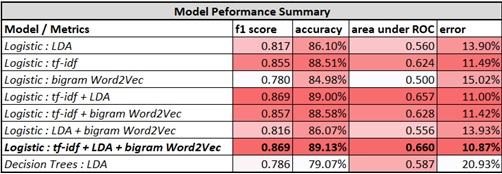

Amazon reviews are often the most publicly visible reviews of consumer products. We know that Amazon Product Reviews Matter to Merchants because those reviews have a tremendous impact on how we make purchase decisions. Reviews and ratings also help increase discoverability as potential buyers tend to filter their options based on ratings. Hence, customer feedback in form of reviews and ratings has become an important source for businesses to improve upon.
The problem today is that for many businesses, it can be tough to analyze a large corpus of customer reviews and quantify how good or bad a product is and with that understand what features make a product favorable or unfavorable. Additionally, relevant information about products and its features can sometimes be hard to identify or extract from a large volume of reviews. In Amazon specifically, there are also numerous cases where products have an overall average rating of 3 which is considered neutral. Such a situation can primary arise in 2 scenarios - one where majority of the customers generally rate a product 3, and the second case being where there’s a nearly equal number of customers giving a rating to a product that falls on the either extreme side of the rating scale. This happens when certain features specifically appeal to certain people. In such cases, it become pertinent for merchants to evaluate reviews on a user level rather than looking at the overall average rating. This can be very hard when the reviews are numerous. And so, there needs to be an easier way for merchants to be able to gauge user sentiment - be it positive or negative and also understand on a broader level, the common reasons for users projecting that sentiment.
To solve these problems we built an ETL pipeline and model analyzing 0.5million reviews predicting whether the customer liked the food. Our best model used Logistic Regression on bi-gram (Word2Vec) achieving a 93% accuracy with 0.85 AUC.
Evaluation and Results
Generally, the results of this experiment were very successful. The classifiers managed to accurately tag a great amount of user-generated data much further past the random baseline of 50%. Our takeaway was that the model trained on the Logistic Classifier using all the features together – tf-idf, LDA and bi-gram with Word2Vec gave us the best performance in terms of accuracy and AUC. The Logistic classifier trained solely on tf-idf also gave us similarly good results. Compared to the logistic model, decision trees fared poorly.
We tested certain hypothesis that we had formulated at the beginning of our analysis and were able to evaluate it through our exploratory analysis and model building approach.
• Adding regressor ‘helpfulness_score’ to model M which in this case was Logistic with tf-idf did not improve the accuracy performance of the model. The previous accuracy was 88.51% and it marginally went upto 88.7% which wasn’t a considerable improvement.
• We did not find that the verbosity of a review is related to its helpfulness. In fact, through the EDA we concluded that reviews that are voted helpful tend to be concise and shorter in length hence invalidating our hypothesis.

Skills Used: Text Mining, Extrapolatory Data Analysis(EDA), Extract Transform Load(ETL), Word2Vec, Regression, LDA, Decision Trees
| Visit: | Project link |
| Project Report: | See |